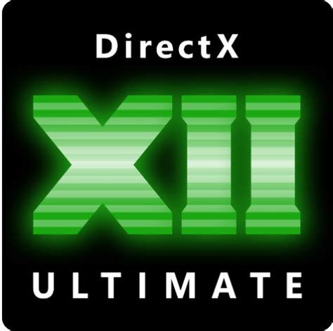
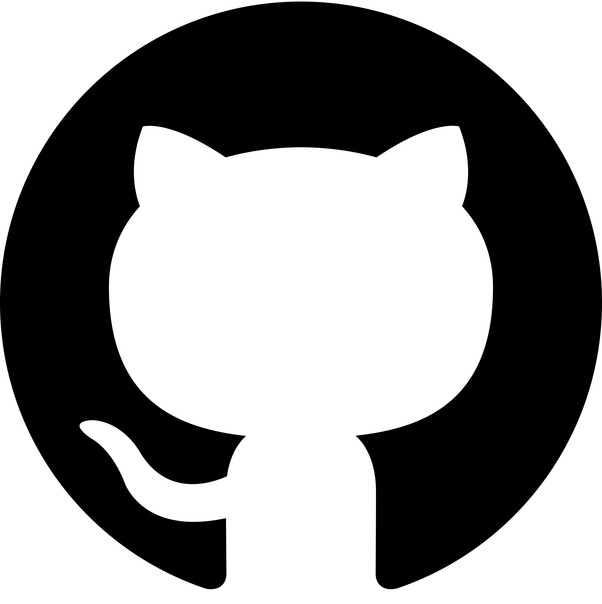

À propos de moi
je me spécialise dans le développement de jeux vidéo avec un fort intérêt pour l'architecture technique. Ma formation m'a permis d'acquérir des bases solides en programmation bas niveau (C++, DirectX12) et en développement réseau. Particulièrement attentif aux retours constructifs, je m'investis pleinement dans chaque projet pour perfectionner mes méthodes de travail. Je cherche aujourd'hui à relever de nouveaux défis techniques et à transformer des problématiques complexes en solutions de gameplay performantes.
Compétences
 C
C C++ (STL / POO)
C++ (STL / POO) C#
C#
DirectX12 Unity
Unity
Git / GitHub- Développement de jeux (architecture ECS, physique, shader)
- Mathématiques 3D
Projets
Projet perso 3
Projet personnel des projets realiser seul ou en petite équipe durant des game jams ou des projet personnels.
Projet perso 3
Projet personnel des projets realiser seul ou en petite équipe durant des game jams ou des projet personnels.
Projet scolaire 14
Projets réalisés à l’école supérieure.
Projet scolaire 14
Projets réalisés à l’école supérieure.